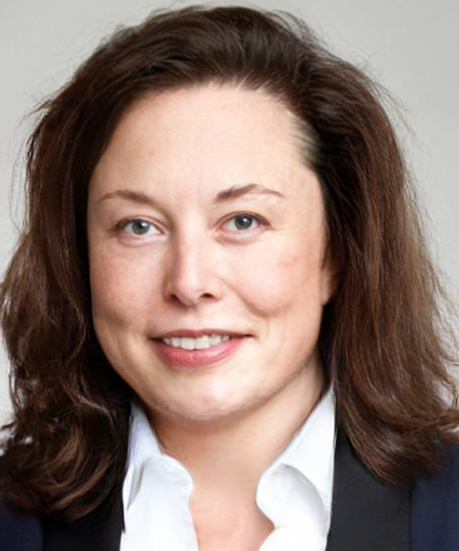

ECONOMISTA, FÍSICA E ANALISTA EM DESENVOLVIMENTO DE SISTEMAS
Data de nascimento: 28/06/1971
Solteira
Endereço: Rua do Silício, 123 - Los Angeles, USA
Telefone: 086-681-5000
E-mail:elena.moska@teslamotors.com
Redes sociais: @eu_elenamoska (Intagram e Twitter)
FORMAÇÃO ACADÊMICA
Instituto de Tecnologia SpaceX(2007 - 2009): Graduação em Análise e Desenvolvimento de Sistemas.
Universidade da Pennsylvania(1992 - 1995): Graduação em Ciências Econômicas(Bacharela).
Faculdade de Artes e Ciências da Pennsylvania(1992 - 1995): Graduação em Física (Bacharela).
OUTROS CURSOS
Instituto de Tecnologia SpaceX(2017):Design Gráfico - básico.
EXPERIÊNCIA PROFISSIONAL
Twitter Inc.(2022 - atual): Diretora-Executiva. Aquisição total da empresa.
Neuralink (2016 - atual): Fundadora e CEO. Pretendo criar dispositivos para tratar de doenças cerebrais graves, com o desenvolvimento de interfaces cérebro-computador.
The Boring Company (2016 - atual): Fundadora. Pretendo estabelecer uma rede de túneis subterrânea financeiramente viável de transporte, diminuindo (mais da metade) o tempo de deslocamento de um ponto a outro da cidade.
SolarCity - Subsidiária da Tesla Inc. - (2006 - atual): Co-fundadora e Ex-presidente. Responsável pela colaboração entre SolarCity e Tesla no uso de baterias de veículos elétricos para suavizar o impacto da rede elétrica nas placas de energia solar.
Tesla Inc. (2004 - atual): CEO. Supervisiono a estratégia de produtos da empresa, com a atenção voltada especialmente para o design, a engenharia e a fabricação de veículos elétricos, para que se tornem mais acessíveis aos consumidores comuns.
SpaceX (2002 - atual): Fundadora, CEO e Designer-Chefe. Desenvolvi a espaçonave Falcon 9.
IDIOMAS
Inglês: nível avançado(C2).
Espanhol: nível intermediário(B1).
Francês: nível intermediário(B2).
Coreano: nível básico(A2).
INFORMÁTICA
Conhecimento em:
Linux e Windows;
Microsoft Office e LibreOffice;
INFORMAÇÕES ADICIONAIS
Experiência em Python, C++ , C#, Java, Ruby e SQL.
Desenvolver jogos é minha paixão.
Gosto de mangás, animes, video games e xadrez.